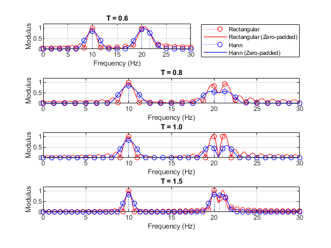
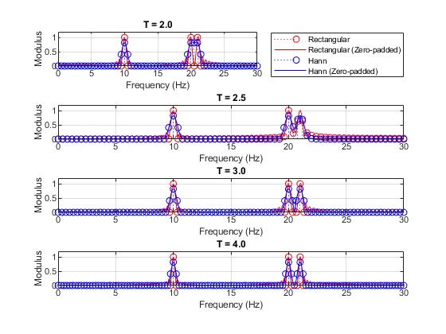

clc; close all; clear all;
f1 = 10;
f2 = 20;
f3 = 21;
fs = 60;
T_values_1 = [0.6, 0.8, 1.0, 1.5];
T_values_2 = [2, 2.5, 3, 4];
num_plots_1 = length(T_values_1);
num_plots_2 = length(T_values_2);
num_rows = 4;
num_cols = 1;
figure;
for idx = 1:num_plots_1
T = T_values_1(idx);
t = 0:1/fs:T-1/fs;
x = 2*sin(2*pi*f1*t) + 2*sin(2*pi*f2*t) + 2*sin(2*pi*f3*t);
N = length(x);
X = fft(x);
f = fs * (0:N-1) / N;
Xz = fft([x zeros(1,2000-N)]);
Nz = length(Xz);
fz = fs * (0:Nz-1) / Nz;
whan = hanning(N);
x_win = x .* whan';
X_win = fft(x_win);
Xz_win = fft([x_win zeros(1,2000-N)]);
Nz_win = length(Xz_win);
fz_win = fs * (0:Nz_win-1) / Nz_win;
subplot(num_rows, num_cols, idx);
h1 = stem(f(1:N/2+1), abs(X(1:N/2+1)/fs/T), 'r:', 'DisplayName', 'Rectangular');
hold on;
h2 = plot(fz(1:Nz/2+1), abs(Xz(1:Nz/2+1)/fs/T), 'r', 'DisplayName', 'Rectangular (Zero-padded)');
h3 = stem(f(1:N/2+1), sqrt(8/3)*abs(X_win(1:N/2+1)/fs/T), 'b:', 'DisplayName', 'Hann');
h4 = plot(fz_win(1:Nz_win/2+1), sqrt(8/3)*abs(Xz_win(1:Nz_win/2+1)/fs/T), 'b', 'DisplayName', 'Hann (Zero-padded)');
hold off;
title(sprintf('T = %.1f', T));
xlabel('Frequency (Hz)');
ylabel('Modulus');
axis([0 30 0 1.2]);
grid on;
if idx == 1
legend_entries = [h1, h2, h3, h4];
end
end
legend(legend_entries, {'Rectangular', 'Rectangular (Zero-padded)', 'Hann', 'Hann (Zero-padded)'}, 'Location', 'bestoutside');
figure;
for idx = 1:num_plots_2
T = T_values_2(idx);
t = 0:1/fs:T-1/fs;
x = 2*sin(2*pi*f1*t) + 2*sin(2*pi*f2*t) + 2*sin(2*pi*f3*t);
N = length(x);
X = fft(x);
f = fs * (0:N-1) / N;
Xz = fft([x zeros(1,2000-N)]);
Nz = length(Xz);
fz = fs * (0:Nz-1) / Nz;
whan = hanning(N);
x_win = x .* whan';
X_win = fft(x_win);
Xz_win = fft([x_win zeros(1,2000-N)]);
Nz_win = length(Xz_win);
fz_win = fs * (0:Nz_win-1) / Nz_win;
subplot(num_rows, num_cols, idx);
h1 = stem(f(1:N/2+1), abs(X(1:N/2+1)/fs/T), 'r:', 'DisplayName', 'Rectangular');
hold on;
h2 = plot(fz(1:Nz/2+1), abs(Xz(1:Nz/2+1)/fs/T), 'r', 'DisplayName', 'Rectangular (Zero-padded)');
h3 = stem(f(1:N/2+1), sqrt(8/3)*abs(X_win(1:N/2+1)/fs/T), 'b:', 'DisplayName', 'Hann');
h4 = plot(fz_win(1:Nz_win/2+1), sqrt(8/3)*abs(Xz_win(1:Nz_win/2+1)/fs/T), 'b', 'DisplayName', 'Hann (Zero-padded)');
hold off;
title(sprintf('T = %.1f', T));
xlabel('Frequency (Hz)');
ylabel('Modulus');
axis([0 30 0 1.2]);
grid on;
if idx == 1
legend_entries = [h1, h2, h3, h4];
end
end
legend(legend_entries, {'Rectangular', 'Rectangular (Zero-padded)', 'Hann', 'Hann (Zero-padded)'}, 'Location', 'bestoutside');
 